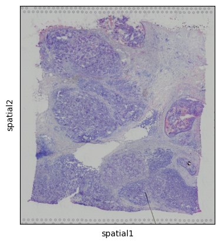
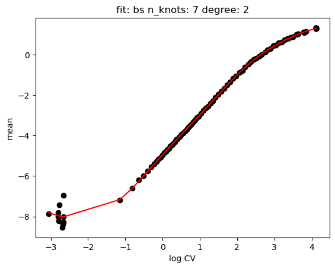
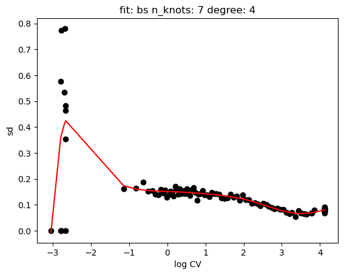
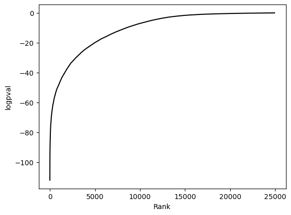
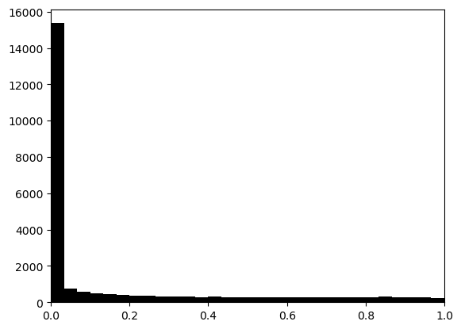
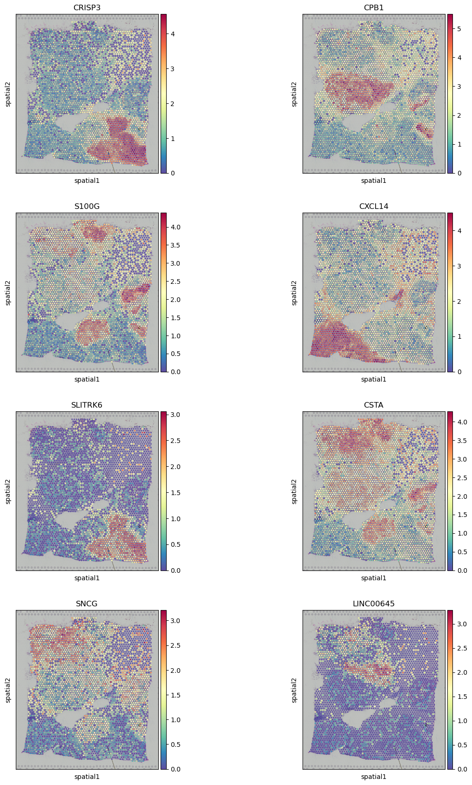

[1]:
import scanpy as sc
import singleCellHaystack as hs
Load data
[2]:
adata = sc.datasets.visium_sge()
adata
100%|██████████| 9.50M/9.50M [00:00<00:00, 28.1MB/s]
100%|██████████| 26.9M/26.9M [00:00<00:00, 29.6MB/s]
/Users/diez/miniconda3/envs/singleCellHaystack/lib/python3.10/site-packages/anndata/_core/anndata.py:1830: UserWarning: Variable names are not unique. To make them unique, call `.var_names_make_unique`.
utils.warn_names_duplicates("var")
[2]:
AnnData object with n_obs × n_vars = 3798 × 36601
obs: 'in_tissue', 'array_row', 'array_col'
var: 'gene_ids', 'feature_types', 'genome'
uns: 'spatial'
obsm: 'spatial'
[3]:
adata.var_names_make_unique()
[4]:
sc.pl.spatial(adata)

Process
[5]:
sc.pp.normalize_total(adata)
sc.pp.log1p(adata)
Haystack
[6]:
res = hs.haystack(adata, coord="spatial")
> starting haystack ...
> entering array method ...
> scaling coordinates ...
> calculating feature stds ...
> removing 11678 genes with zero variance ...
> calculating grid points ...
> calculating distance to cells ...
> calculating densities ...
> calculating Q dist ...
> calculating KLD for 24923 features ...
100%|██████████| 24923/24923 [00:11<00:00, 2235.51it/s]
> calculating feature's CV ...
> selecting genes to randomize ...
> calculating randomized KLD ...
100%|██████████| 100/100 [00:05<00:00, 18.89it/s]
> calculating P values ...
> done.
[7]:
hs.plot_rand_fit(res, "mean")
hs.plot_rand_fit(res, "sd")


[8]:
hs.plot_pval_rank(res)
hs.plot_pval_hist(res)


[9]:
sum = res["results"]
sum
[9]:
| gene | KLD | pval | pval_adj | logpval | logpval_adj | |
|---|---|---|---|---|---|---|
| 8277 | CRISP3 | 0.131658 | 1.002692e-112 | 2.499010e-108 | -111.998832 | -107.602232 |
| 5157 | CPB1 | 0.052947 | 8.150681e-112 | 2.031394e-107 | -111.088806 | -106.692206 |
| 24196 | S100G | 0.071816 | 6.617157e-103 | 1.649194e-98 | -102.179329 | -97.782728 |
| 7116 | CXCL14 | 0.044309 | 8.811847e-103 | 2.196177e-98 | -102.054933 | -97.658333 |
| 15913 | SLITRK6 | 0.340828 | 2.602061e-102 | 6.485117e-98 | -101.584682 | -97.188082 |
| ... | ... | ... | ... | ... | ... | ... |
| 1851 | AL021026.1 | 1.433165 | 9.995057e-01 | 1.000000e+00 | -0.000215 | 0.000000 |
| 825 | AC104170.1 | 1.796741 | 9.996506e-01 | 1.000000e+00 | -0.000152 | 0.000000 |
| 6164 | AC093591.2 | 2.445691 | 9.997189e-01 | 1.000000e+00 | -0.000122 | 0.000000 |
| 10991 | RFX3-AS1 | 1.757526 | 9.997641e-01 | 1.000000e+00 | -0.000102 | 0.000000 |
| 14911 | RPL41 | 0.000380 | NaN | 1.000000e+00 | NaN | 0.000000 |
24923 rows × 6 columns
[10]:
sc.pl.spatial(adata, color=sum.gene.iloc[:8], ncols=2, cmap="Spectral_r")

Export results
[11]:
#sum.to_csv("results-spatial.csv")